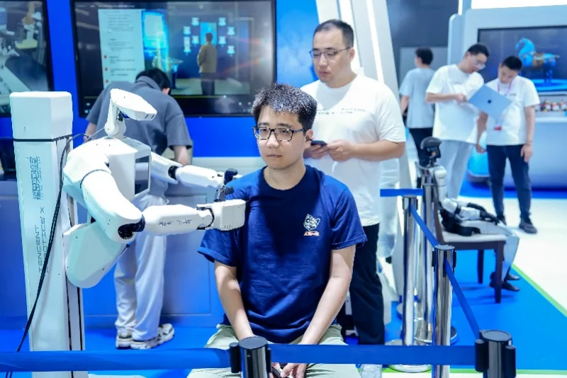

Tencent Robotics X — Profile
The lab, the robots and the platform behind Tencent's bet.
While others race to ship humanoids, Tencent refuses to mass-produce robot bodies. Its Robotics X Lab builds the "brain" instead — from the Xiao Liu eldercare robot to the Tairos platform.

Search "Tencent Robotics" and you will find a company that is deliberately doing the opposite of its rivals. Unitree ships thousands of units; AgiBot and UBTECH chase factory deployments. Tencent's Robotics X Lab, led by chief scientist Zhang Zhengyou, refuses to mass-produce robot bodies — it builds demonstration robots only to pressure-test algorithms, then sells the "brain" to everyone else.
Tencent's flagship is a wheeled humanoid for home and eldercare. In September 2024 it unveiled the 5th-generation Xiao Wu (小五) — a wheel-leg hybrid that was tested in nursing homes helping with chores, fetching packages and assisting elderly users to stand. At WAIC in July 2026, Tencent showed Xiao Liu (小六), the direct successor: 165 cm, 70 kg, 38 degrees of freedom, with key-rope (cable-tendon) drive and three-finger hands. Its headline skill is Chinese-medicine massage — the robot records professional techniques through self-developed tactile and force sensing, then uses reinforcement learning to adapt pressure to each person's muscles. It has mastered four two-arm massage routines.
Tencent's real product is software. With the Futian Laboratory it built Tairos, billed as China's first "plug-and-play" embodied-intelligence platform offering large models, development tools and data services. By WAIC 2026, Tairos had been deployed across robots from Unitree, PaXini, Leju, Dobot and Engine AI. Tencent also open-sourced OpenClaw, an embodied-AI agent ecosystem — the LeXiang M1 humanoid became the first mass-producible robot to connect to it. Its Xiao Wu even completed China's first cross-floor delivery in an open commercial complex at Shanghai's West Bund International Legal Service Center.
Under the hood sit two embodied base models Tencent launched at WAIC 2026: Hy-Embodied-VLM-1.0 (a vision-language model that lets robots "see" the world) and Hy-Embodied-RxBrain-1.0 (a world-cognition model that lets them reason and imagine). In August 2026 Tencent open-sourced three of these embodied models — a bid to set the standard in the same way it did for WeChat.
Zhang Zhengyou is frank about the limits. He argues eldercare is the hardest scene in embodied AI — the combination of touch, force and vision is not yet solved, and he calls the "iPhone moment" for humanoids premature. The lab's demonstration robots exist to squeeze the hardest problems out of the most difficult real-world scenarios. Tencent has no plans for a "Xiao Qi" — its bet is that the winners of the robot era will be whoever owns the brain, not the body.
The lab, the robots and the platform behind Tencent's bet.
Unitree, AgiBot, UBTECH and the rest — where Tencent fits.
The policy and capital engine behind China's robot boom.
How China's flagship humanoids compare on specs.
Company profiles, product pages and analysis for China's robotics ecosystem.